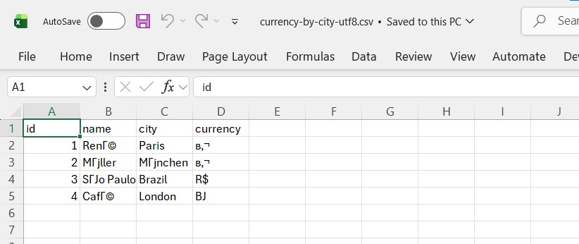
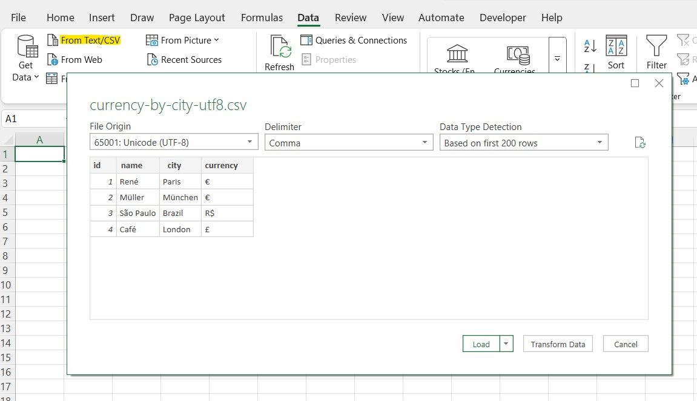
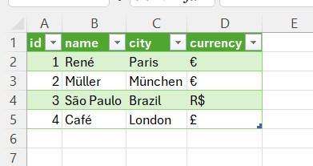

Работа с CSV-файлами без проблем с кодировкой
Почему кириллица и символы с диакритикой превращаются в «кракозябры» и как правильно открывать и сохранять CSV.
Вы открываете CSV в Excel и видите Привет вместо нормального текста, или é вместо é. С файлом всё в порядке. Excel просто угадал не ту кодировку.

Что происходит
CSV – это обычный текст, и в нём ничего не сказано о кодировке. При двойном щелчке по файлу Excel использует системную кодовую страницу (например, Windows-1251 на русской Windows, Windows-1252 на западноевропейских системах), если только файл не начинается с метки порядка байтов UTF-8 (BOM). Поэтому файл в UTF-8 без BOM читается неверно.
Как правильно открыть файл
- Не открывайте двойным щелчком. Откройте пустую книгу.
- Данные → Из текстового/CSV-файла.
- Выберите файл. В окне предпросмотра меняйте Источник файла, пока текст не станет читаемым (обычно 65001: Юникод (UTF-8), а для старых русских файлов 1251: кириллица (Windows)).
- Проверьте разделитель, затем нажмите Загрузить или Преобразовать данные.


Как правильно сохранить файл
- CSV UTF-8 (разделитель – запятая) в списке типов файлов записывает UTF-8 с BOM. Выбирайте его, когда файл идёт в другую программу или открывается в Excel на другом компьютере.
- Обычный вариант CSV (разделители – запятые) сохраняет в системной кодовой странице и теряет символы, которых в ней нет.
- Некоторые строгие загрузчики отвергают BOM. Тогда уберите его в текстовом редакторе, например в Notepad++ (Кодировки → UTF-8), и сохраните оттуда.
Проблемы с разделителем
Во многих локалях, включая русскую и немецкую, Excel использует в качестве разделителя списка точку с запятой, потому что запятая – десятичный разделитель. Файл с запятыми, открытый двойным щелчком, окажется в одном столбце, и то же случится с файлом с точкой с запятой на английской системе. В диалоге «Из текстового/CSV-файла» задайте разделитель явно. В текстовом файле строка sep=; в начале заставляет Excel использовать точку с запятой, но другие программы воспримут её как данные, поэтому применяйте только для файлов, предназначенных для Excel.
Другие ловушки
- Ведущие нули пропадают, когда Excel угадывает столбец как число. В диалоге импорта задайте тип столбца «Текст».
- Длинные числа (больше 15 цифр) округляются и показываются в экспоненциальной записи. Импортируйте их как текст.
- Даты преобразуются с локальным порядком дня и месяца.
03/04/2024может означать третье апреля или четвёртое марта. - Поля с переносами строк или разделителями должны быть в кавычках, а кавычки внутри удваиваться. Программы, записывающие CSV склейкой строк, часто это упускают.
- Многократное пересохранение CSV в Excel меняет содержимое (числа, даты, нули). Храните оригинал и рабочий .xlsx отдельно.
Для регулярных файлов
Используйте Power Query: он запоминает кодировку, разделитель и типы столбцов, так что следующий файл – это одно обновление.